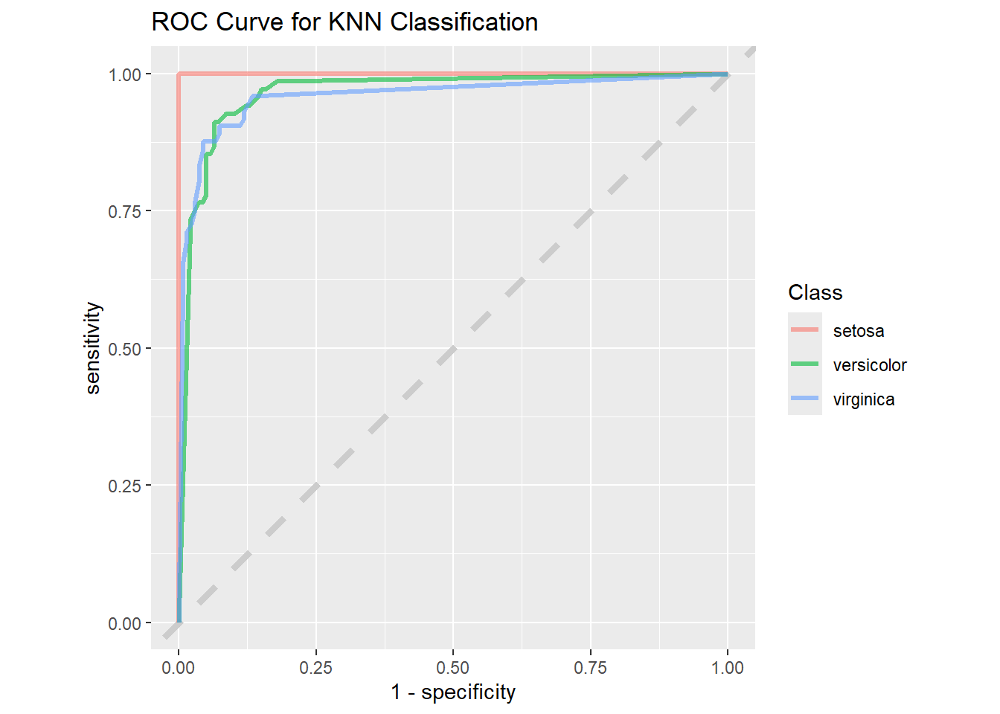

library(tidyverse)
library(patchwork)1 Introduction
This is the “Iris” dataset. Originally published at UCI Machine Learning Repository: Iris Data Set, this small dataset from 1936 is often used for testing out machine learning algorithms and visualizations (for example, Scatter Plot). Each row of the table represents an iris flower, including its species and dimensions of its botanical parts, sepal and petal, in centimeters.
Iris data set is used widely as an example in field of data sciences and widely available to both python and R users.
2 Importing Libraries
Let’s load the required packages
3 Importing data
iris_data <- read_csv("F:/Data_Sci/Internship Projects/Iris_ML/Iris.csv")Rows: 150 Columns: 5
── Column specification ────────────────────────────────────────────────────────
Delimiter: ","
chr (1): Species
dbl (4): SepalLengthCm, SepalWidthCm, PetalLengthCm, PetalWidthCm
ℹ Use `spec()` to retrieve the full column specification for this data.
ℹ Specify the column types or set `show_col_types = FALSE` to quiet this message.iris_data <- iris_data %>% janitor::clean_names() %>%
mutate(species = str_replace_all(species,"Iris-", "")) %>%
mutate(species = as.factor(species))
glimpse(iris_data)Rows: 150
Columns: 5
$ sepal_length_cm <dbl> 5.1, 4.9, 4.7, 4.6, 5.0, 5.4, 4.6, 5.0, 4.4, 4.9, 5.4,…
$ sepal_width_cm <dbl> 3.5, 3.0, 3.2, 3.1, 3.6, 3.9, 3.4, 3.4, 2.9, 3.1, 3.7,…
$ petal_length_cm <dbl> 1.4, 1.4, 1.3, 1.5, 1.4, 1.7, 1.4, 1.5, 1.4, 1.5, 1.5,…
$ petal_width_cm <dbl> 0.2, 0.2, 0.2, 0.2, 0.2, 0.4, 0.3, 0.2, 0.2, 0.1, 0.2,…
$ species <fct> setosa, setosa, setosa, setosa, setosa, setosa, setosa…We have features like sepal_length_cm, sepal_width_cm, petal_length_cm and petal_width_cm and species necessary for the classification of the species.
First, check for NA in the data.
iris_data %>% map(~sum(is.na(.)))$sepal_length_cm
[1] 0
$sepal_width_cm
[1] 0
$petal_length_cm
[1] 0
$petal_width_cm
[1] 0
$species
[1] 0There no NA which is really good for the data.
4 Analysisng data
Let’s visualize the data with above parameters
plot_iris <- function(param){
iris_data %>% ggplot(aes(species, {{param}})) +
geom_boxplot(aes(color = species)) +
theme(legend.position = "none")
}
(plot_iris(sepal_length_cm) + plot_iris(petal_length_cm))/
(plot_iris(sepal_width_cm) + plot_iris(petal_width_cm))There is quite a difference between the species in all parameters “setosa” < “versicolor” < “virginica” except for sepal_width_cm where “versicolor” < “virginica” < “setosa”
5 Building a model
Let’s start by loading the tidymodels package and splitting our data into training and testing sets.
library(tidymodels)
set.seed(2024)
iris_split <- initial_split(iris_data, prop = 0.8)
iris_train <- training(iris_split)
iris_test <- testing(iris_split)Data is not large enough to build a model so creating resamples of the data to evaluate the model
set.seed(2025)
iris_boot <- bootstraps(iris_train, times = 5)
iris_boot# Bootstrap sampling
# A tibble: 5 × 2
splits id
<list> <chr>
1 <split [120/45]> Bootstrap1
2 <split [120/40]> Bootstrap2
3 <split [120/38]> Bootstrap3
4 <split [120/39]> Bootstrap4
5 <split [120/46]> Bootstrap5Let’s build 2 models and check which is better for the data.
5.1 Random Forest Model
# random forest model
rf_spec <- rand_forest() %>%
set_mode("classification") %>%
set_engine("ranger")
rf_specRandom Forest Model Specification (classification)
Computational engine: ranger 5.2 K - nearest neighbors model
knn_spec <- nearest_neighbor(neighbors = 5) %>%
set_mode("classification") %>%
set_engine("kknn")
knn_specK-Nearest Neighbor Model Specification (classification)
Main Arguments:
neighbors = 5
Computational engine: kknn 5.3 Setting workflow()
Next let’s start putting together a tidymodels workflow(), a helper object to help manage modeling pipelines with pieces that fit together like Lego blocks. Notice that there is no model yet: Model: None
iris_wf <- workflow() %>%
add_formula(species ~ .)
iris_wf══ Workflow ════════════════════════════════════════════════════════════════════
Preprocessor: Formula
Model: None
── Preprocessor ────────────────────────────────────────────────────────────────
species ~ .5.4 Fitting the model
Now we can add a model and fit the model to each of the resamples. First, we can fit the randomforest model
rf_rs <- iris_wf %>%
add_model(rf_spec) %>%
fit_resamples(
resamples = iris_boot,
control = control_resamples(save_pred = TRUE)
)
rf_rs# Resampling results
# Bootstrap sampling
# A tibble: 5 × 5
splits id .metrics .notes .predictions
<list> <chr> <list> <list> <list>
1 <split [120/45]> Bootstrap1 <tibble [3 × 4]> <tibble [0 × 3]> <tibble>
2 <split [120/40]> Bootstrap2 <tibble [3 × 4]> <tibble [0 × 3]> <tibble>
3 <split [120/38]> Bootstrap3 <tibble [3 × 4]> <tibble [0 × 3]> <tibble>
4 <split [120/39]> Bootstrap4 <tibble [3 × 4]> <tibble [0 × 3]> <tibble>
5 <split [120/46]> Bootstrap5 <tibble [3 × 4]> <tibble [0 × 3]> <tibble> Now we can add a model and fit the model to each of the resamples. First, we can fit the knn model
knn_rs <- iris_wf %>%
add_model(knn_spec) %>%
fit_resamples(
resamples = iris_boot,
control = control_resamples(save_pred = TRUE)
)
knn_rs# Resampling results
# Bootstrap sampling
# A tibble: 5 × 5
splits id .metrics .notes .predictions
<list> <chr> <list> <list> <list>
1 <split [120/45]> Bootstrap1 <tibble [3 × 4]> <tibble [0 × 3]> <tibble>
2 <split [120/40]> Bootstrap2 <tibble [3 × 4]> <tibble [0 × 3]> <tibble>
3 <split [120/38]> Bootstrap3 <tibble [3 × 4]> <tibble [0 × 3]> <tibble>
4 <split [120/39]> Bootstrap4 <tibble [3 × 4]> <tibble [0 × 3]> <tibble>
5 <split [120/46]> Bootstrap5 <tibble [3 × 4]> <tibble [0 × 3]> <tibble> 6 Evaluating the model
6.1 Evaluating Random Forest model
collect_metrics function collect the necessary parameters for evaluation
collect_metrics(rf_rs)# A tibble: 3 × 6
.metric .estimator mean n std_err .config
<chr> <chr> <dbl> <int> <dbl> <chr>
1 accuracy multiclass 0.947 5 0.0144 Preprocessor1_Model1
2 brier_class multiclass 0.0332 5 0.0106 Preprocessor1_Model1
3 roc_auc hand_till 0.998 5 0.000846 Preprocessor1_Model1collect_predictions(rf_rs) %>% glimpse()Rows: 208
Columns: 8
$ .pred_class <fct> versicolor, virginica, virginica, setosa, versicolor,…
$ .pred_setosa <dbl> 0.0020, 0.0000, 0.0000, 1.0000, 0.0000, 1.0000, 0.000…
$ .pred_versicolor <dbl> 0.93323254, 0.00000000, 0.33701825, 0.00000000, 0.998…
$ .pred_virginica <dbl> 0.0647674603, 1.0000000000, 0.6629817460, 0.000000000…
$ id <chr> "Bootstrap1", "Bootstrap1", "Bootstrap1", "Bootstrap1…
$ .row <int> 1, 6, 7, 9, 18, 19, 21, 22, 28, 30, 34, 35, 39, 40, 4…
$ species <fct> versicolor, virginica, virginica, setosa, versicolor,…
$ .config <chr> "Preprocessor1_Model1", "Preprocessor1_Model1", "Prep…6.2 Evaluating K-nearest neighbor model
collect_metrics(knn_rs)# A tibble: 3 × 6
.metric .estimator mean n std_err .config
<chr> <chr> <dbl> <int> <dbl> <chr>
1 accuracy multiclass 0.922 5 0.00981 Preprocessor1_Model1
2 brier_class multiclass 0.0660 5 0.00783 Preprocessor1_Model1
3 roc_auc hand_till 0.979 5 0.00687 Preprocessor1_Model1collect_predictions(rf_rs) %>% glimpse()Rows: 208
Columns: 8
$ .pred_class <fct> versicolor, virginica, virginica, setosa, versicolor,…
$ .pred_setosa <dbl> 0.0020, 0.0000, 0.0000, 1.0000, 0.0000, 1.0000, 0.000…
$ .pred_versicolor <dbl> 0.93323254, 0.00000000, 0.33701825, 0.00000000, 0.998…
$ .pred_virginica <dbl> 0.0647674603, 1.0000000000, 0.6629817460, 0.000000000…
$ id <chr> "Bootstrap1", "Bootstrap1", "Bootstrap1", "Bootstrap1…
$ .row <int> 1, 6, 7, 9, 18, 19, 21, 22, 28, 30, 34, 35, 39, 40, 4…
$ species <fct> versicolor, virginica, virginica, setosa, versicolor,…
$ .config <chr> "Preprocessor1_Model1", "Preprocessor1_Model1", "Prep…As we can see that random_forest model has higher accuracy than knn model
Confusion matrix lets us know how accurate the model is predicting the values
rf_rs %>% conf_mat_resampled()# A tibble: 9 × 3
Prediction Truth Freq
<fct> <fct> <dbl>
1 setosa setosa 13.4
2 setosa versicolor 0
3 setosa virginica 0
4 versicolor setosa 0
5 versicolor versicolor 13.2
6 versicolor virginica 1.8
7 virginica setosa 0
8 virginica versicolor 0.4
9 virginica virginica 12.8Now for the roc curve which shows us how accurate a model is for different species in the data.
rf_rs %>%
collect_predictions() %>%
roc_curve(truth = species, .pred_setosa, .pred_versicolor,
.pred_virginica) %>%
ggplot(aes(1 - specificity, sensitivity, color = .level)) +
geom_abline(lty = 2, color = "gray80", linewidth = 1.5) +
geom_path(show.legend = TRUE, alpha = 0.6, linewidth = 1.2) +
coord_equal() +
labs(title = "ROC Curve for Random Forest Classification",
color = "Class")When we compare the same to the “KNN” model we can see the difference.
knn_rs %>%
collect_predictions() %>%
roc_curve(truth = species, .pred_setosa, .pred_versicolor,
.pred_virginica) %>%
ggplot(aes(1 - specificity, sensitivity, color = .level)) +
geom_abline(lty = 2, color = "gray80", linewidth = 1.5) +
geom_path(show.legend = TRUE, alpha = 0.6, linewidth = 1.2) +
coord_equal() +
labs(title = "ROC Curve for KNN Classification",
color = "Class")
The “1 - Specificity” drops for the “KNN” model when compared to the “Random Forest” model, so we will use the “Random Forest” model to do predictions.
iris_final <- iris_wf %>%
add_model(rf_spec) %>%
last_fit(iris_split)
iris_final %>% collect_metrics()# A tibble: 3 × 4
.metric .estimator .estimate .config
<chr> <chr> <dbl> <chr>
1 accuracy multiclass 0.933 Preprocessor1_Model1
2 roc_auc hand_till 1 Preprocessor1_Model1
3 brier_class multiclass 0.0534 Preprocessor1_Model16.3 Predicting Outcomes
Based on the “iris_final” model we can predict the species based on the other parameters.
# Create a new data frame for the measurements
new_data <- tibble(
sepal_length_cm = 4.6,
sepal_width_cm = 3.8,
petal_length_cm = 1.4,
petal_width_cm = 0.2
)
# Extract the workflow from the last_fit result
workflow_fit <- iris_final %>% extract_workflow()
# Make predictions using the new data
predictions <- predict(workflow_fit, new_data)
predictions# A tibble: 1 × 1
.pred_class
<fct>
1 setosa